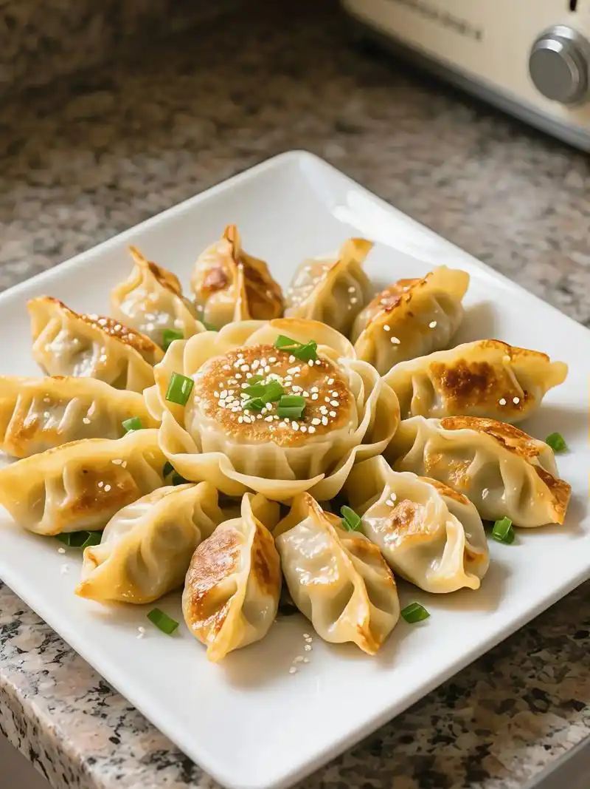
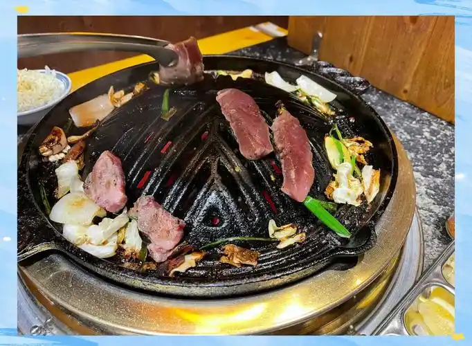
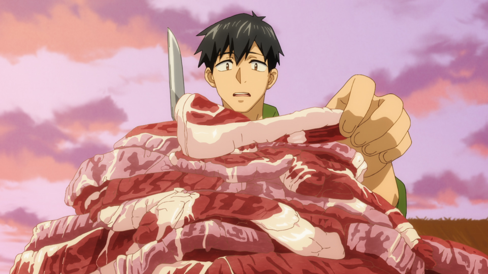
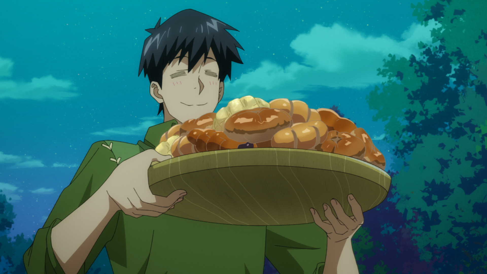
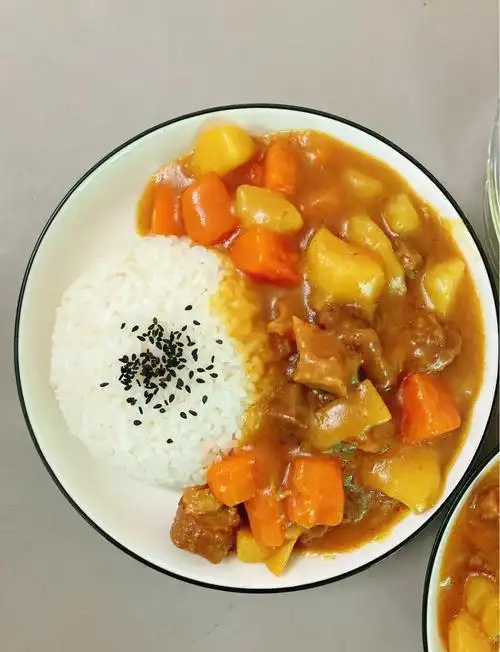
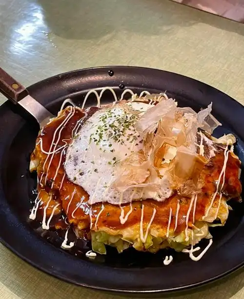

第二季
第01话 — 新たな仲間はとんでもない（新伙伴不得了）
ムコーダ一行迎来了新的伙伴。为了款待大家，他使用兽人将军的肉制作了风味十足的饺子，并利用毒蛛的肉（口感类似蟹肉）制作了多道中华风料理，让新伙伴惊叹不已。
オークジェネラルのしっかり味付け餃子
中华料理用オークジェネラル（兽人将军）的肉做馅，加入大量调味料后手工包制的煎饺。外皮焦脆、内馅多汁，调味浓郁。
 动画
动画

现实- 调味肉馅
ごま油・塩胡椒・醤油・酒・鶏ガラスープの素・おろし生姜・にんにくで味付けしたオークジェネラルのひき肉を粘り気が出るまで練る。用芝麻油、盐胡椒、酱油、酒、鸡粉、姜末、蒜泥调味的兽人将军绞肉，揉至出粘性。
- 加入蔬菜
みじん切りにして塩揉みしたキャベツとニラを投入して混ぜて餃子の具にする。加入切碎并盐腌过的卷心菜和韭菜，混合制成饺子馅。
- 包制与煎烤
餃子の皮で包み、油を引いたフライパンで中火で焼いて少し色が付いたところで水で溶いた小麦粉を入れて蓋をする。用饺子皮包好后，在涂了油的平底锅中用中火煎，稍上色后倒入水溶面粉，盖上锅盖。
- 完成
パチパチと乾いた音になったらごま油を回しかけて完成。听到噼啪的干脆声后淋上芝麻油完成。
ヴェノムタランチュラのチャーハン
中华料理使用塩茹でしたヴェノムタランチュラ（毒蛛）的肉制作的炒饭。ムコーダ表示毒蛛的肉味道与蟹肉相同。
- 处理食材
ヴェノムタランチュラを塩茹でして身を取り出す。ムコーダ曰くカニと同じ味。将毒蛛盐水煮熟后取出肉。穆寇达说味道和螃蟹一样。
- 炒制
フライパンで卵とご飯を炒め、ヴェノムタランチュラの身を加えてチャーハンに仕上げる。在平底锅中炒鸡蛋和米饭，加入毒蛛肉做成炒饭。
ヴェノムタランチュラ玉＆春巻き
中华料理用毒蛛肉制作的玉子烧和春卷，口感鲜嫩酥脆。
ヴェノムタランチュラの網焼き
烧烤将毒蛛的肉直接在网架上烤制，简单调味后享用原汁原味的蟹肉风味。
新加入的伙伴对毒蛛料理的蟹肉风味感到震惊，フェル则一如既往地大快朵颐，对饺子的调味赞不绝口。
第02话 — 地竜解体承ります（承接地龙解体）
ムコーダ一行承接了地龙的解体任务，获得了大量高品质的龙肉。同时使用ラムとマトンの肉制作了成吉思汗烤肉，以及用オーク肉制作了豚キムチ丼。
ラムとマトンのジンギスカン
和食使用羊肉和马肉在成吉思汗烤肉锅中炖煮的经典北海道风味料理，搭配多种蔬菜，汤汁鲜美。
 动画
动画

现实- 准备锅具
ジンギスカン鍋を温めてカット野菜(かぼちゃ・玉ねぎ・にんじん・もやし・さやえんどう)を投入。将成吉思汗烤肉锅加热，放入切好的蔬菜（南瓜、洋葱、胡萝卜、豆芽、豌豆角）。
- 炖煮
火が通ったらタレに漬け込んだラムとマトンの肉を入れて煮込む。蔬菜熟透后放入用酱汁腌制的羔羊肉和成年羊肉炖煮。
レーズンバターサンド
甜品 / その他网络超市购入的葡萄干黄油三明治，作为旅途中的轻食点心。
网络超市购入
オーク肉の豚キムチ丼
和食用オーク（兽人）的薄切肉代替猪肉，搭配白菜、洋葱、韭菜等蔬菜和泡菜调料炒制，铺在米饭上再盖温泉蛋的盖饭。

动画 现实
现实
- 炒肉与蔬菜
薄切りにしたオーク肉を炒めて白菜・玉ねぎ・ニラ・もやしを投入し、キムチ鍋の素、おろしにんにく、ごま油を入れて炒める。将薄切的兽人肉炒熟，加入白菜、洋葱、韭菜、豆芽，放入泡菜锅底料、蒜泥、芝麻油翻炒。
- 装盘
ご飯の上に乗せ温泉卵を乗せる。盛在米饭上，放上温泉蛋。
地龙解体后获得的大量高品质食材让全员兴奋不已，フェル对成吉思汗烤肉的风味非常满意。
第03话 — 三つ星確定地竜ステーキ（三星确定地龙牛排）
ムコーダ使用地龙肉制作了多道豪华料理，包括牛丼、煮豚、ロールキャベツ、豚汁、ビーフシチュー，以及压轴的ローストドラゴン（烤地龙）。这顿三星级的盛宴让从魔们大饱口福。
ブラッディホーンブルとワイバーン肉の牛丼
和食使用血角牛和飞龙肉制作的日式牛肉盖饭，肉质软嫩，汤汁浓郁。
现实
オークジェネラルの煮豚
和食将オークジェネラル（兽人将军）的肉用甘辛酱汁慢炖至软烂入口即化的煮猪肉。
- 慢炖
オークジェネラルの肉を甘辛いタレでじっくり煮込む。将兽人将军的肉用甘咸酱汁慢慢炖煮。
レッドボアのロールキャベツ
洋食用レッドボア（红野猪）的绞肉包裹在卷心菜叶中，放入清汤中慢煮的经典洋食。
- 制作
レッドボアの挽き肉をキャベツで巻いてコンソメスープで煮込む。将红野猪绞肉用卷心菜卷起来，用高汤炖煮。
オークジェネラルの豚汁
和食使用兽人将军的肉和多种蔬菜制作的味噌风味的日式浓汤，暖身又营养。
- 煮制
オークジェネラルの肉と野菜を味噌仕立ての汁で煮込む。将兽人将军的肉和蔬菜用味噌汤汁炖煮。
ワイバーン肉のビーフシチュー
洋食用飞龙肉制作的浓郁炖牛肉，口感柔软，酱汁醇厚。
 动画
动画
 现实
现实
ローストドラゴン（烤地龙）
洋食本话的压轴料理。将アースドラゴン（地龙）的肉与土豆、胡萝卜、洋葱一起用橄榄油和香草在烤箱中烤制，最后淋上大蒜酱油牛排酱汁。地龙肉的品质远超血角牛，是最高等级的食材。
 动画
动画
 现实
现实
- 准备食材
クッキングシートを敷いたオーブンの天板に塩胡椒を馴染ませたアースドラゴンの肉とカットしたジャガイモとニンジン、皮をむいた玉ねぎを並べる。在铺了烘焙纸的烤箱烤盘上，摆放撒了盐胡椒的地龙肉和切好的土豆、胡萝卜、去皮的洋葱。
- 烤制
オリーブオイルを全体に回しかけてハーブを乗せてオーブンで焼く。整体淋上橄榄油，放上香草，放入烤箱烤制。
- 淋酱完成
仕上げにニンニク醤油のステーキソースをかける。最后淋上大蒜酱油牛排酱。
这顿三星级盛宴让フェル赞不绝口，地龙牛排的品质令所有从魔都为之震撼。スイ和ドラちゃん也吃得津津有味。
第04话 — ダンジョンはお惣菜とともに（地下城与熟食同行）
在地下城探险中，ムコーダ准备了大量从网络超市购入的熟食和自制的料理。ビーフシチュー是第15话的作り置き（提前制作保存的），其余大部分为网络超市直接购入的熟食。
黒パンとワイバーン肉のビーフシチュー
洋食黑面包搭配第15话提前制作的飞龙肉炖牛肉，是地下城探险中的经典搭配。ビーフシチュー为作り置き（提前制作保存的）。
动画
现实
ビーフシチュー为第15话作り置き（提前制作保存）
焼き鳥と鴨のロースト
和食烤鸡肉串和烤鸭肉，网络超市购入的熟食。
网络超市购入
異世界の肉盛り合わせ
和食多种异世界魔獣肉的拼盘，网络超市购入的熟食组合。
网络超市购入
サンドイッチ
その他三明治，网络超市购入的简便食品，适合地下城探险时食用。
网络超市购入
地下城探险中，熟食的便利性得到了充分发挥。フェル虽然更偏好现做的料理，但对ビーフシチュー的品质依然表示认可。
第05话 — 敵はモンスターか空腹か（敌人是怪物还是饥饿）
在讨伐任务中，饥饿成为了比怪物更可怕的敌人。ムコーダ制作了豚汁、各种三明治、鍋焼きうどん、フライドチキン、串揚げ和アメリカンドッグ等丰盛料理，让全员恢复体力。
とん汁
和食日式猪肉味噌汤，暖身恢复体力的经典料理。
和風ステーキサンド
和食日式风味牛排三明治，网络超市购入。
网络超市购入
和風ハンバーグサンド
和食日式风味汉堡排三明治，网络超市购入。
网络超市购入
オーク肉のモーニングポークチャップサンド
洋食使用オーク肉制作的早餐猪排酱三明治。
ロックバード肉入り鍋焼きうどん
和食使用ロックバード（岩鸟）肉制作的锅烧乌冬面，加入香菇、天妇罗虾、鱼糕、葱花和鸡蛋，热腾腾的一锅让人恢复元气。
- 煮汤底
鍋に椎茸とロックバードの肉を入れ、水と醤油、みりん、塩、顆粒だしを入れて火にかける。锅中放入香菇和岩鸟肉，加水、酱油、味醂、盐、颗粒高汤煮开。
- 加入面条和配料
沸騰したらうどんを入れて海老天、かまぼこ、ネギ、卵を割入れてひと煮立ちしたら完成。沸腾后放入乌冬面，加入炸虾、鱼糕、葱、打入鸡蛋，再次煮沸完成。
ロックバードのフライドチキン3種のソース添え
洋食使用岩鸟肉制作的炸鸡，搭配三种不同的酱汁，外酥里嫩。
 动画
动画
 现实
现实
- 腌制
一口大に切った肉をにんにく・酒・醤油で下味付けし、小麦粉をまぶして揚げる。将肉切成一口大小，用大蒜、酒、酱油调味，裹上面粉炸制。
- 炸制
油でカリッと揚げ、3種類のソースを添えて完成。炸至酥脆，配上三种酱汁完成。
あっちこっちの世界を股にかけた具材の串揚げ
和食汇集了两个世界各种食材的串炸，种类丰富，趣味十足。
とどめのアメリカンドッグ
その他作为收尾的美国热狗（玉米狗），用热蛋糕粉混合液裹粗绞香肠后油炸制成。
- 制作面糊
粗挽きウィンナーをホットケーキミックスに卵と牛乳、塩を混ぜ合わせた生地に絡ませる。将粗绞香肠裹上混合了热蛋糕粉、鸡蛋、牛奶、盐的面糊。
- 油炸
160度の油で揚げて完成。用160度的油炸制完成。
饥饿的从魔们在看到这一桌丰盛料理后立刻恢复了活力，フェル对锅烧乌冬面和炸鸡赞不绝口，スイ和ドラちゃん也吃得非常开心。
第06话 — ネットスーパーレベルアップする（网络超市升级）
ムコーダ的网络超市技能升级了！他利用新解锁的商品制作了照烧月见汉堡、豆乳浓汤，还购入了各种甜品和饮料，享受升级后的购物体验。
コーヒー牛乳＆フルーツ牛乳
飲み物咖啡牛奶和水果牛奶，网络超市购入的饮品。
网络超市购入
ボリューム満点 コカトリステリヤキ月見バーガー
洋食使用コカトリス（鸡蛇）肉制作的照烧月见汉堡，分量十足。在黑面包上叠放生菜、照烧肉、切达奶酪、烤洋葱圈、番茄和半熟荷包蛋。
 动画
动画
 现实
现实
- 煎肉
コカトリスの肉を照り焼きのタレを入れて皮目の方から焼く。将鸡蛇肉加入照烧酱汁，从皮面开始煎制。
- 组装
黒パンの上にレタス、照り焼き、チェダーチーズ、焼いた輪切りの玉ねぎ、トマト、固めの半熟の目玉焼きを乗せる。在黑面包上依次放上生菜、照烧肉、切达奶酪、烤洋葱圈、番茄、半熟煎蛋。
やさしい具だくさん豆乳スープ
和食温和醇厚的豆浆浓汤，加入培根、胡萝卜、洋葱和西兰花，营养丰富口感柔和。
- 炒蔬菜
ベーコン、にんじん、玉ねぎを炒めて火が通ったら水とコンソメを入れて煮込む。将培根、胡萝卜、洋葱炒熟，加入水和高汤炖煮。
- 加入豆浆
最後にブロッコリーと豆乳を入れて煮込んで完成。最后加入西兰花和豆浆炖煮完成。
ケーキづくし
甜品各种蛋糕，网络超市购入的甜品。
网络超市购入
カスタードプリン
甜品卡仕达布丁，网络超市购入的甜品。
网络超市购入
ロールケーキ
甜品瑞士卷蛋糕，网络超市购入的甜品。
网络超市购入
网络超市升级后商品种类更加丰富，ムコーダ兴奋不已。照烧月见汉堡的分量和风味让フェル非常满意，甜品则让スイ和ドラちゃん开心不已。
第07话 — 買い食い天国（买食天堂）
ムコーダ一行来到了可以自由购买各种食物的城市，享受买食的天堂。他制作了ホーンラビット的串烧和豪华ミートローフ，还购入了不二家的烤制点心作为甜品。
ホーンラビットの串焼き
和食使用ホーンラビット（角兔）肉制作的串烧，肉质介于羊肉和鸡肉之间，串烤后风味独特。
ブラッディホーンブルとオーク肉のミートローフ
洋食使用血角牛和兽人肉的混合绞肉制作的豪华肉 loaf，中间嵌入鹌鹑蛋，外层包裹培根，搭配特制酱汁。
动画
现实
- 炒蔬菜
バターを溶かしたフライパンにみじん切りの玉ねぎを投入して少し火を通ったらミックスベジタブルを入れて炒める。在融化了黄油的平底锅中加入洋葱碎，稍炒后加入混合蔬菜翻炒。
- 混合肉馅
ボウルにひき肉と牛乳で浸したパン粉、炒めた野菜、溶いた卵とナツメグ、塩こしょうを入れて粘り気が出るまでこねる。碗中放入绞肉、牛奶泡过的面包糠、炒过的蔬菜、打散的鸡蛋、肉豆蔻、盐胡椒，揉至出粘性。
- 成型
型にベーコンを敷き詰めタネを半分入れて押し、茹でたうずら卵を並べ、さらにタネを入れる。アルミホイルをかけてオーブンで焼く。在模具中铺满培根，填入一半肉馅压实，摆上煮熟的鹌鹑蛋，再填入肉馅。盖上铝箔放入烤箱烤制。
- 制作酱汁
ソースは肉汁とバター、ケチャップ、中濃ソース、赤ワインを煮詰める。酱汁用肉汁、黄油、番茄酱、中浓酱、红酒熬煮浓缩。
不二家の焼き菓子
甜品不二家的烤制点心，网络超市购入的知名品牌甜品。
网络超市购入
在城市中自由购买食材和食物的体验让ムコーダ感到无比幸福。ミートローフ的豪华程度令フェル赞叹，不二家的点心则让全员都露出了满足的笑容。
第08话 — 鍛冶屋はBBQの夢を見るか（铁匠梦见BBQ吗）
ムコーダ一行拜访了铁匠，并举办了一场盛大的BBQ。使用新作特制烤架烤制オーク肉和ブラッディホーンブル肉，还制作了烧肉盖饭、コカトリスピラフ詰め和ハイボール。
ワイバーンの焼き肉丼
和食使用ワイバーン（飞龙）肉制作的日式烧肉盖饭，肉质鲜嫩多汁。
现实
ローストコカトリスのピラフ詰め
洋食将コカトリス（鸡蛇）的肉用香草盐腌制后，内部填入冷冻抓饭，涂上橄榄油后在烤箱中烤制，外焦里嫩，米饭吸收了肉汁风味十足。
- 腌制
ハーブソルトで下ごしらえしたコカトリスの肉に冷凍ピラフを詰め込み縛る。将用香草盐调味的鸡蛇肉塞入冷冻皮拉夫饭后捆扎好。
- 烤制
オリーブオイルを塗り予熱しておいたオーブンで焼く。涂上橄榄油，放入预热好的烤箱烤制。
プリン
甜品布丁，网络超市购入的甜品。
网络超市购入
オーク肉とブラッディホーンブル肉バーベキュー
烧烤使用新作特制烤架，将オーク（兽人）肉和ブラッディホーンブル（血角牛）肉直接烧烤，享受BBQ的乐趣。
- 烤制
新作の特製グリルでオーク肉とブラッディホーンブル肉を焼く。在新制作的特制烤架上烤制兽人肉和血角牛肉。
骨付きのソーセージ
洋食带骨香肠，网络超市购入，BBQ的经典搭配。
网络超市购入
ハイボール
飲み物威士忌加苏打水，挤入柠檬汁的经典ハイボール，BBQ的完美搭档。
- 调制
ウィスキーと炭酸水を注いだ後にレモンを絞る。倒入威士忌和苏打水后挤入柠檬汁。
BBQ的氛围让铁匠也放下了工作的疲惫，全员在美食和ハイボール的陪伴下度过了一个愉快的夜晚。新作特制烤架的性能令大家赞不绝口。
第09话 — バカンスは討伐とともに（假期与讨伐同行）
ムコーダ一行在度假的同时也接下了讨伐任务。他使用オーク肉手工制作了ソーセージ（香肠），并烹制了日式家常カレー（咖喱），享受度假与冒险并行的异世界生活。
オーク肉のソーセージ
洋食使用オーク（兽人）的绞肉手工制作的香肠。将肉馅灌入ホワイトシープ（白绵羊）的肠衣中，捻转成型后烤至焦香。
- 调味肉馅
ひき肉にしたオーク肉に砂糖と塩胡椒を入れて粘り気が出るまで混ぜる。在兽人绞肉中加入糖和盐胡椒，搅拌至出粘性。
- 灌肠
絞り袋を付けた口金に塩抜きしたホワイトシープの腸をはめて、ひき肉を入れて空気が入らないように腸に詰める。捻って形を整え切る。在装有挤花嘴的挤花袋上套上脱盐的白绵羊肠衣，将绞肉填入肠衣中，注意不要让空气进入。扭结整形后切段。
- 烤制
焦げ目がつくまで焼いて完成。烤至出现焦痕完成。
オーク肉のおうちカレー
洋食使用オーク肉制作的日式家常咖喱，洋葱炒软后加入肉和蔬菜炖煮，放入两种咖喱块至浓稠。简单却温暖的味道。

动画
现实- 炒洋葱
薄切りにした玉ねぎを油を敷いた鍋に入れしなってきたら、切ったオーク肉・じゃがいも・にんじんを入れ炒める。将薄切洋葱放入涂了油的锅中，炒软后加入切好的兽人肉、土豆、胡萝卜翻炒。
- 炖煮
水を足して煮込み灰汁を取って2種類のルーを入れてトロみがでてきたら完成。加水炖煮，去除浮沫，加入两种咖喱块，煮至浓稠完成。
手工制作的ソーセージ让フェル赞不绝口，家常カレー的温暖味道则让全员在讨伐之余感受到了度假的惬意。スイ对咖喱的浓郁风味特别喜爱。
第10话 — ディナーは一枚の食器から（晚餐从一件餐具开始）
ムコーダ从网络超市购入了精美的餐具，围绕新餐具准备了一顿豪华晚餐。包括三色そぼろ丼、月见汉堡、塩釜焼き（盐壳烤），以及各种蛋糕和甜品。
コカトリスの三色鶏そぼろ丼
和食使用コカトリス（鸡蛇）肉制作的日式三色盖饭，在米饭上铺上鸡肉松、鸡蛋碎和切碎的秋葵，色彩鲜艳，营养均衡。
现实
- 装盘
ご飯に鶏そぼろと卵、刻んだオクラを盛り付ける。在米饭上盛上鸡肉松、鸡蛋、切碎的秋葵。
ブラッディホーンブル肉100%月見バーガー
洋食使用100%ブラッディホーンブル（血角牛）肉制作的月见汉堡，肉质顶级，搭配半熟荷包蛋，豪华至极。
动画
现实
ブラッディホーンブル肉の塩釜焼き
和食使用血角牛肉制作的盐壳烤肉。将大量盐与蛋白和迷迭香混合成奶油状，包裹用大蒜和黑胡椒腌制过的肉，在烤箱中烤制。切开盐壳后肉质鲜嫩多汁，搭配蛋黄芥末酱食用。
- 制作盐壳
大量の塩に卵白とローズマリーの葉を入れてクリーム状になるまで混ぜて天板に敷く。在大量盐中加入蛋白和迷迭香叶，搅拌至奶油状后铺在烤盘上。
- 包裹烤制
ニンニクとブラックペッパーで下ごしらえした肉を軽く茹でたレタスで包み、塩の上に置いてさらに上から塩で包み、オーブンで焼く。将用大蒜和黑胡椒调味的肉用轻焯过的生菜包裹，放在盐上，再用盐覆盖，放入烤箱烤制。
- 制作酱汁
ソースは卵黄と粒マスタードを混ぜる。酱汁将蛋黄和颗粒芥末混合。
ホールケーキとプリンサンデー
甜品整个蛋糕和布丁圣代，网络超市购入的豪华甜品组合。
网络超市购入
チョコレートケーキ
甜品巧克力蛋糕，网络超市购入的甜品。
网络超市购入
新餐具的精美让晚餐的仪式感倍增。塩釜焼き的切开瞬间令全员惊叹，月见汉堡的血角牛肉质让フェル赞不绝口。甜品则让スイ和ドラちゃん幸福满满。
第11话 — 戦え！？大怪獣決戦（战斗！？大怪兽决战）
面对大怪兽的决战，ムコーダ在战斗后用ミノタウロス肉和蘑菇制作了ハヤシライス（牛肉饭），还挑战了クラーケン焼き（烤克拉肯），搭配食后的蛋糕甜品，为激烈的战斗画上了圆满的句号。
ミノタウロス肉とマッシュルームのハヤシライス
洋食使用ミノタウロス（牛头人）肉和蘑菇制作的日式牛肉饭。洋葱和肉炒软后加入蘑菇，炖煮后放入ハヤシライスルー，最后淋上生奶油，搭配焯水的西兰花。
动画
现实
- 炒制
油を引いて熱した鍋に薄切りの玉ねぎと肉を入れ塩胡椒。火が通ったら薄切りのマッシュルームを入れ炒める。在涂了油的热锅中放入薄切洋葱和肉，加盐胡椒。肉熟后加入薄切蘑菇翻炒。
- 炖煮
水を入れてアクを取りつつ20分ほど煮込みハヤシライスのルーを入れる。加水炖煮约20分钟，边去浮沫边煮，加入牛肉烩饭咖喱块。
- 装盘
ご飯に盛り付け生クリームをかけ、茹でたブロッコリーを添える。盛在米饭上，淋上鲜奶油，配上焯过的西兰花。
食後のケーキ
甜品餐后蛋糕，网络超市购入的甜品。
网络超市购入
クラーケン焼き
和食使用クラーケン（克拉肯）制作的烤料理。用味醂、酱油和生姜泥的酱汁进行下处理后烤制，最后淋上蛋黄酱和七味唐辛子。
- 腌制
クラーケンをみりん・醤油・おろし生姜のタレで下処理をする。将克拉肯用味醂、酱油、姜末酱汁处理后烤制。
- 烤制与调味
焼いてマヨネーズと七味唐辛子をかけて完成。烤制后淋上蛋黄酱和七味辣椒粉完成。
激烈的战斗后，ハヤシライス的温暖味道让全员放松下来。クラーケン焼き的独特风味让フェル感到新奇，蛋黄酱和七味的搭配更是令人惊喜。
第12话 — 新たなる帰還（新的归来）
第二季最终话。ムコーダ一行来到了海边，享受海鲜的盛宴。他制作了特大モダン海鮮お好み焼き和デラックスお好み焼きカーキ入り，搭配鱼生拼盘、大岩贝汤和かき氷（刨冰），为异世界的旅程画上了完美的句号。
魚の切り身の盛り合わせ
和食各种鱼生切片的拼盘，新鲜的海鲜直接切片享用，展现异世界海洋食材的丰富。
大岩貝のスープ
和食使用异世界大型贝类制作的浓汤，鲜味十足。
特大モダン海鮮お好み焼き
和食特大号现代风海鲜大阪烧，使用お好み焼き粉、鸡蛋、卷心菜和干虾制作面糊，在铁板上铺开后加入炒面、バーミリオンシュリンプ（朱红虾）和クラーケン（克拉肯），翻面后淋上お好みソース、蛋黄酱，撒青海苔和柴鱼片。

现实- 制作面糊
ボールにお好み焼き粉・水・卵を入れて混ぜる。みじん切りしたキャベツを入れてさっくり混ぜた後、干しエビを入れて生地が完成。碗中放入大阪烧粉、水、鸡蛋混合。加入切碎的卷心菜轻轻搅拌后，放入干虾，面糊完成。
- 铁板煎制
油を引いた鉄板に生地を広げしばらくしたら、炒めた焼きそばの麺と適当な大きさに切ったバーミリオンシュリンプ(エビ)とクラーケン(イカ)を乗せる。在涂了油的铁板上摊开面糊，稍煎后放上炒过的炒面面条和切成适当大小的朱红虾（虾）和克拉肯（鱿鱼）。
- 翻面调味
火が通ったらひっくり返してお好みソースとマヨネーズ、青のり・かつお節をかけて完成。煎熟后翻面，淋上大阪烧酱和蛋黄酱，撒上青海苔和柴鱼片。
デラックスお好み焼きカーキ入り
和食豪华版大阪烧，加入了カーキ（牡蛎）的豪华版本，海鲜风味更加浓郁。
かき氷
甜品刨冰，海边的完美甜品。网络超市购入的刨冰机和糖浆。
网络超市购入（刨冰机与糖浆）
海边的海鲜盛宴为第二季画上了完美的句号。特大海鲜大阪烧的豪华程度令全员惊叹，クラーケン和バーミリオンシュリンプ的鲜味让フェル大呼过瘾。かき氷则为这趟异世界之旅带来了清凉的甜蜜回忆。